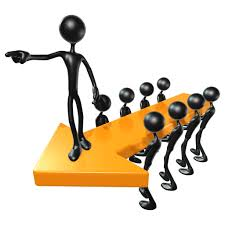
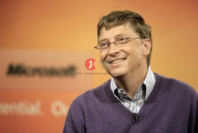

기술 경영자
기술경영자란 회사의 기술개발 전체를 담당하는 총괄 책임자이다. 기업활동 중에서 기술을 효과적으로 획득·관리·활용하기 위한 모든 경영지원 활동을 총괄하는 책임자이다. 기술경영은 보통 연구·개발·제품개발 등의 경영활동중에서 생산관리나 마케팅과는 구분하여 쓰는 말이다. 기술경영은 구매 회계·노사관계와는 독립적으로 활동하며,핵심역량 제고로 평가한다.기업 경영에 관하여 최고의 의사결정을 내리고, 경영활동의 전체적 수행을 지휘 ·감독하는 사람 오늘의 전문경영자에게는 그 어느 때보다도 사회적 책임의 성실한 수행을 요구하고 있다. 따라서 전문경영자는 현대기업의 성격을 올바르게 이해하고 창의적이고 혁신적인 노력으로 최대한의 경영성과를 실현하여야 한다.뿐만 아니라 어떠한 노력이 기업과 경제와 인류에 이바지 할 수 있는가를 언제나 생각하는 경영자가 되어야 한다. 즉, 건전한 경영이념과 경영철학을 가져야 한다.
>
>
The Necessary of major that we have to study
| Number | Picture | Name | Explain ( business ) |
|---|---|---|---|
| 1 |  |
Steve Jobs | 애플의 창립자이자 세계최초의 PC 개발자. 1976년 스티브 워즈니악, 로널드 웨인과 함께 애플을 공동창업했다. 애플 2를 통해 개인용 컴퓨터를 대중화하였고, GUI와 마우스의 가능성을 처음으로 내다보고 애플 리사와 매킨토시에서 이 기술을 도입하였다. 1985년 경영분쟁에 의해 애플에서 나온 이후 NeXT 컴퓨터를 창업하여 신개념 운영체제를 개발했다. 1996년 애플이 NeXT를 인수하게 되면서 다시 애플로 돌아오게 되었고 1997년에는 임시 CEO로 애플을 다시 이끌게 되었으며 이후 다시금 애플이 혁신과 시장에서의 성공을 거두게끔 이끌었다. 잡스는 《인크레더블》 《토이스토리》 등을 제작한 컴퓨터 애니메이션 제작사인 픽사의 소유주이자 CEO였다. 월트디즈니 사는 최근 74억 달러어치의 자사주식으로 이 회사를 구입하였다. 2006년 6월 이 거래가 완료되어 잡스는 이 거래를 통해 디즈니 지분의 7%를 소유한 최대 개인주주이며 디즈니 사의 이사회의 이사가 되었다. |
| 2 |  |
안철수 | 1. 의대 재학 중에 컴퓨터에 관심을 갖게 됐고, 이후 대한민국 최초의 백신 프로그램인 V1, V2와 V3를 만들었다. 이후 7년간 의사 생활을 하면서 백신을 무료로 제작·배포했다 2. 안철수가 미국 유학 중 1997년 미국의 거대 백신업체 맥아피에게 1000만 달러에 인수 제의가 들어왔다. 당시 안철수는 미국의 실리콘밸리에 갔다. 보통 재벌그룹 회장 정도가 되면 직접 발표를 하는 경우는 거의 없는데 당시 인수에 의욕을 가졌던 맥아피 회장은 안철수 앞에서 직접 발표를 하며 인수를 제안했으나 단번에 거절했다. 그러자 회장은 이전에 자신에게 회사를 매각했던 일본인 대표에게 전화를 걸어 통화를 시켜줬다. 일본 대표는 “당시 회사가 적자나서 힘들었으나 많은 돈을 받고 회사를 팔고난 후 걱정도 없이 잘 지낸다”라며 안철수에게 회사를 팔라고 설득했으나 안철수는 끝내 거절했다. 당시 맥아피는 전세계적으로 사업을 확장하고 있었는데 당시 안철수연구소 때문에 한국에 진출하지 못했기 때문에 이를 인수한 후 안철수연구소를 폐기하고 미국 백신으로 한국 사업을 독점하기 위해서 이러한 인수를 제의한 것이었다. 그러나 안철수는 회사를 매각한다면 그 후에 직원들이 해고되어 실업자가 된다는 사실을 직시했고 또한 한국의 백신이 맥아피같은 해외 업체에 의해 장악당하는 그런 결과를 원하지 않았기 때문에 거절했던 것이었다. |
| 3 |  | Bill Gates | 1974년 폴 앨런과 함께 다트머스대학교에서 개발한 컴퓨터 프로그래밍 언어 베이직(BASIC)에서 아이디어를 얻어 소형컴퓨터에 쓰일 새로운 버전(Altair Basic)을 개발한 데 이어 1975년 대학을 중퇴하고 뉴멕시코 앨버커키에서 마이크로소프트사를 설립하였다. 1981년 세계최대 컴퓨터회사 IBM사로부터 퍼스널컴퓨터에 사용할 운영체제 프로그램(DOS) 개발을 의뢰받은 것을 계기로 지금의 기틀을 마련하였다. 1995년 8월 '윈도 95'를 출시함으로써 퍼스널컴퓨터(PC) 운영체제의 획기적 전환을 가져왔으며, 이는 발매 4일만에 전세계적으로 100만개 이상의 판매실적을 올리는 대기록을 세웠다. PC의 급속한 확산과 더불어 세계 컴퓨터 시장의 주도권을 장악하면서 엄청난 부를 쌓아 《포브스 Forbes》지에서 선정하는 세계 억만장자 순위에서 13년 연속 1위를 차지하였고, 2009년에도 1위에 올랐다 |
| 4 |  |
Dennis Ritchie | 그의 가장 큰 업적은 많은 사람들이 알고 있는 C언어로서 이것이야말로 현대적인 컴퓨팅 환경을 있게한 프로그래밍 언어의 조상이며 살아있는 전설이다. 만일 C언어가 없었다면 이렇게 발전된 컴퓨팅 환경이 오기 힘들었을 것이다. 지금의 리눅스, 윈도우즈, 맥의 OSX 등등 전부 유닉스의 영향을 깊이 받았고 현대적인 프로그래밍 언어도 모두 그 출발이 C언어와 유닉스였다는 점을 부정할 수 없다. |